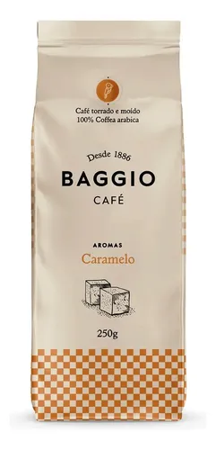
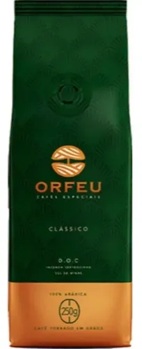

O Baggio Caramelo é um café aromatizado que oferece um sabor marcante e doce, ideal para quem aprecia cafés naturalmente adocicados.

O Café Orfeu é um ícone de qualidade e sabor inigualável, destacando-se no mercado de cafés especiais. A marca, fundada em 2005, se destaca por seu cultivo em altitudes elevadas, onde os grãos são 100% Arábica, cultivados nas altas montanhas do Sul de Minas e Mogiana, em altitudes entre 1.000 e 1.500 metros. A seleção rigorosa dos grãos e a torra especial preservam o açúcar natural, resultando em uma bebida de alta qualidade.

O café do Sul de Minas é internacionalmente reconhecido por sua suavidade, equilíbrio e consistência de sabor. Normalmente apresenta corpo médio a encorpado, acidez delicada e uma doçura natural que conquista tanto iniciantes quanto conhecedores experientes.

De bom é só jesus mesmo porque o café é horrivel